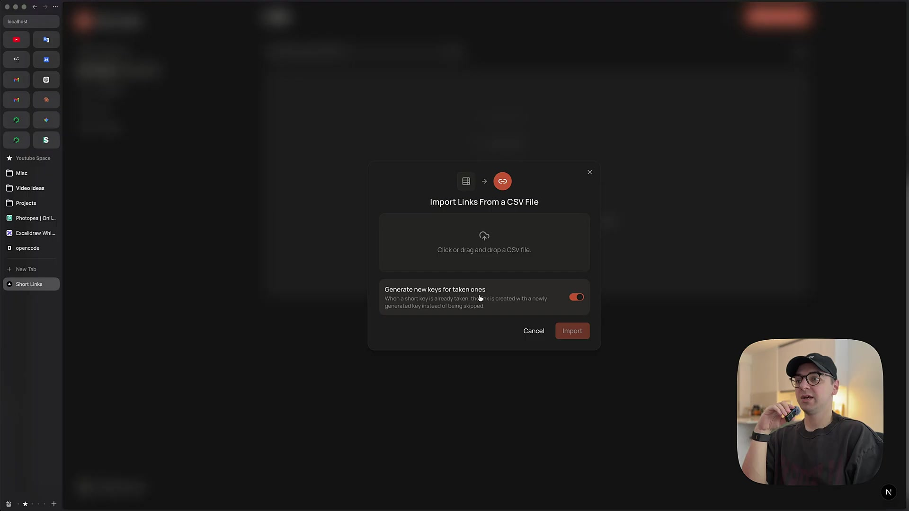
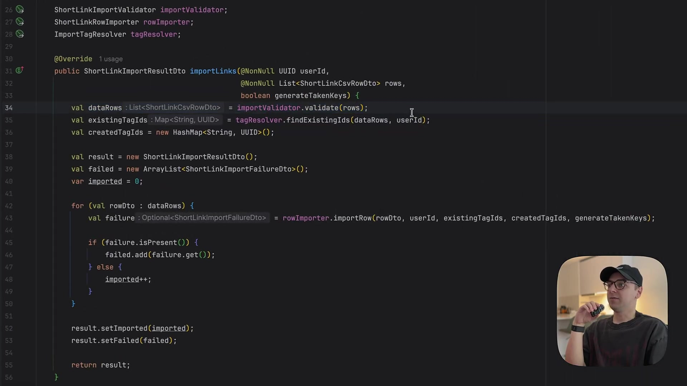
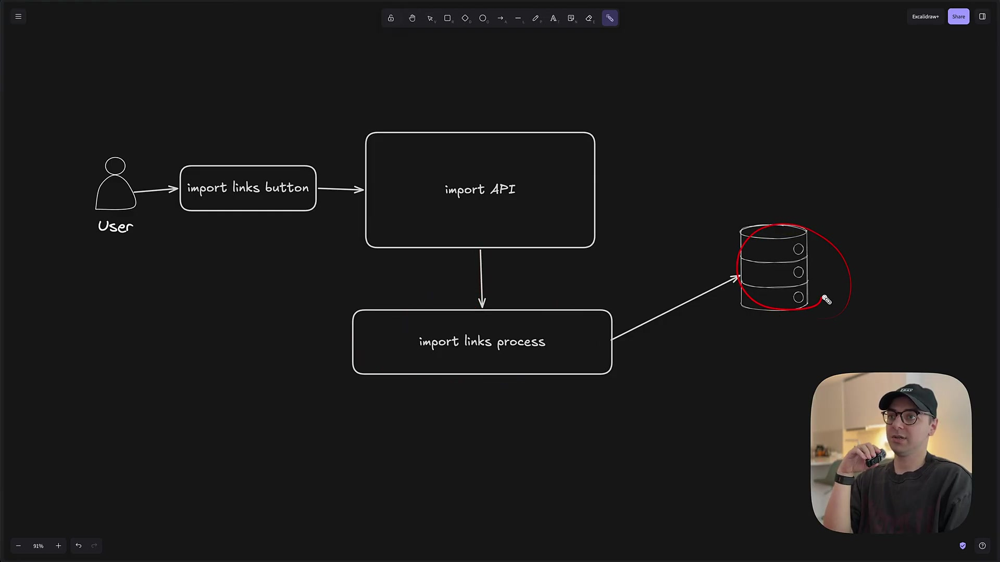
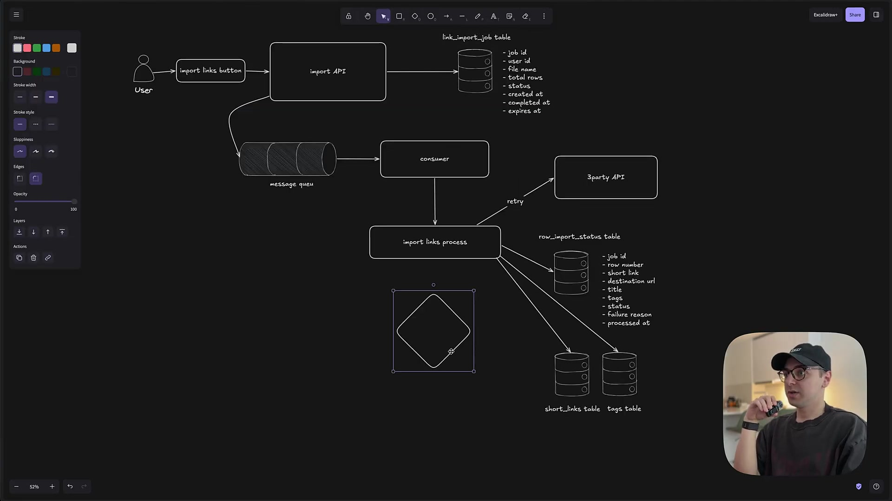
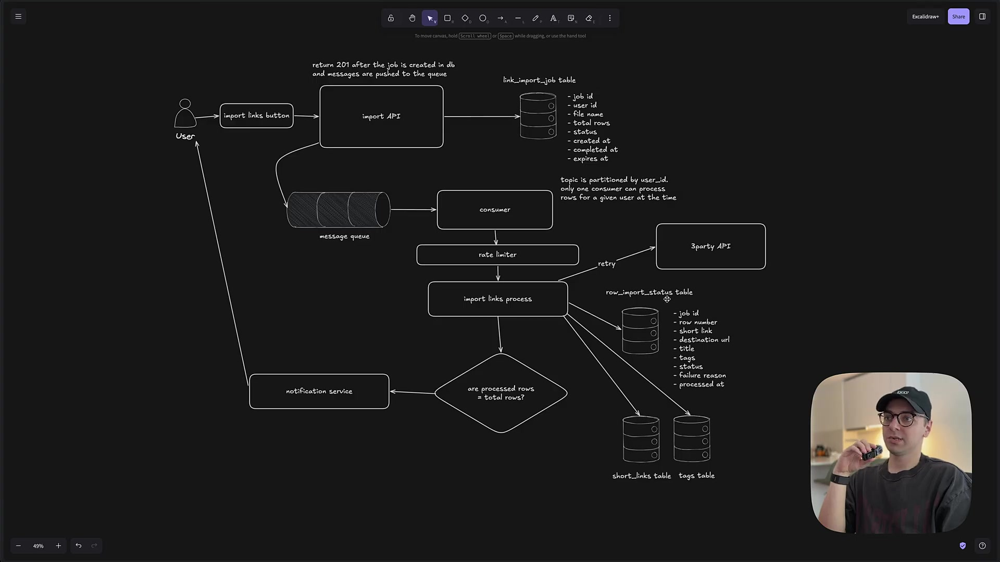

Executive summary
Asynchrony improves the boundary; durability completes it
The case study begins with a URL-shortener feature that imports a CSV file, validates each row, resolves shared tags, creates links, and returns a success-and-failure report. It works for a small file. It becomes fragile when files contain thousands of rows, many users import simultaneously, the process crashes midway, or an external Web Risk API starts throttling requests.
The proposed redesign creates an import-job record, turns rows into queue messages, processes them with a consumer, persists each row's outcome, retries transient failures, notifies the user when the job completes, partitions work by user, rate-limits the third-party API, and later deletes expired row-level records. This is the right direction: the browser no longer owns the lifetime of the work, and progress survives individual requests.
- The job record is the product contract. It gives the user an identifier, status, progress, timestamps, and a durable place to inspect failures.
- The queue is a load and failure boundary. It decouples acceptance from processing and lets workers retry or scale independently.
- Row-level state makes recovery visible. A failed item can be retried without hiding which rows succeeded.
- Ordering does not create exactly-once processing. Duplicate delivery is normal; correctness requires idempotent writes and a stable per-row identity.
- The API-to-queue handoff needs atomicity. A transactional outbox or equivalent prevents a job row from existing without its messages, or messages without the job.
The feature, code, and architecture are presented by the video creator. This article cross-checks the system-design patterns against official Spring Batch, AWS, Azure, and Apache Kafka documentation. It does not claim that the proposed system was load-tested or deployed at the scale discussed.
Feature walkthrough
The user imports links without rebuilding them by hand
The application adds import and export actions to the links page. Import accepts CSV rows containing a short key, destination URL, title, and tags. A toggle can generate a replacement key when the requested one is already taken. Export can preserve the active search and archived-link filters.

This product detail matters. Partial success is legitimate: one malformed or conflicting row should not necessarily discard every valid link. The final job therefore needs more than a binary success flag. It should report accepted, succeeded, failed, skipped, and retried counts, plus a downloadable error report that points back to original row numbers.
First implementation
A synchronous loop is clear, but the request owns everything
The Java service validates all rows, resolves existing tags once, creates missing tags, loops through the rows, invokes a row importer, and collects failures into the response. This is a good local algorithm: duplicated tag work is reduced and each failure has a reason. Its runtime and recovery boundary are the problem.


Architectural shift
Accept a job, then process its rows outside the request
The redesigned API first stores a job with its owner, filename, total row count, status, creation time, completion time, and expiry. Each row becomes a message. A consumer receives messages, calls the existing import logic, and writes a row-level outcome containing the job ID, row number, input fields, status, failure reason, and processing timestamp.

For an HTTP API, an accepted long-running operation normally maps
to 202 Accepted, not a completed-resource response.
The response should include the job identifier and a status URL; a
Location header and optional
Retry-After make polling explicit. The video mentions
returning after messages are pushed, but pushing thousands of row
messages inside the request can itself be slow. Storing the file
in object storage and enqueueing one durable job-start event lets
a background dispatcher stream or chunk the rows later.
State model
Separate job truth from row execution
Job state
PENDING → RUNNING → SUCCEEDED,
PARTIALLY_SUCCEEDED, FAILED, or
CANCELED. Store counts, timestamps, source hash,
policy version, and terminal reason.
Row state
PENDING → PROCESSING → SUCCEEDED,
FAILED_RETRYABLE, FAILED_FINAL, or
SKIPPED. Store attempt count and normalized
error.
The state machine should be monotonic where possible. A terminal
row should not silently return to pending. Job completion should
use an atomic conditional update, such as transitioning only when
completed_rows + final_failed_rows = total_rows and
the current job is nonterminal. This prevents several finishing
workers from sending duplicate “complete” notifications.
Correctness boundary
Assume at-least-once delivery and make processing idempotent
The video suggests that one consumer per user and checking the row table can guarantee a link is not processed twice. The row check is the important part; consumer serialization alone is not enough. A worker can commit the database write and crash before acknowledging the message. The queue then redelivers the same row.
Processing (job_id, row_number) more than once must
produce the same final database state. Enforce a unique row key,
make the link write and row-status transition one transaction,
and acknowledge the message only after commit. A duplicate then
becomes a lookup and no-op, not another link.
The API also performs a dual write: create the job in a database and publish work to a queue. Either side can succeed alone. A transactional outbox stores the job and outbox event in the same database transaction; a relay publishes the event and marks the outbox row later. The relay can still publish twice, so consumers remain idempotent.
“Exactly once” must name its boundary. Kafka transactions can provide exactly-once processing when reading and writing Kafka records under the required configuration. They do not automatically make an external relational-database write, email, or HTTP call exactly once. The application-level invariant still matters.
Throughput control
Partition only when ordering is a real business requirement
Keying messages by user can keep that user's rows ordered within a partition and prevent concurrent imports from racing over shared user state. It also limits throughput for a user with a very large file and can create a hot partition. If rows are independent, a better key may be the job ID, and workers can process chunks in parallel while preserving deterministic conflict handling.
Decide what actually needs ordering: rows within one file, jobs belonging to one user, or only writes targeting the same short key. Make that scope explicit. Queue ordering helps schedule work; database uniqueness and idempotency preserve correctness.
Rate limits and overload
Workers need backpressure, not only a fixed delay
A local rate limiter protects the external Web Risk API from a fast consumer. Production policy should also understand provider quotas, tenant fairness, queue depth, retry storms, and the distinction between transient and permanent errors. Exponential backoff with jitter reduces synchronized retries; a circuit breaker pauses calls when the provider is failing broadly.
- Retry timeouts, throttling, and selected server errors; do not retry malformed URLs or authorization failures indefinitely.
- Move exhausted messages to a dead-letter queue with the job and row identity, then expose an operator replay path.
- Apply per-tenant quotas so one large customer cannot consume all workers or external API capacity.
- Scale workers from queue age and service time, not queue length alone, and cap concurrency against database capacity.
Completion and retention
Notify once, retain enough evidence, then clean deliberately
The video adds a notification service after the last row and a cleanup job that removes expired row statuses. Both are necessary, but both need durable policy. Notification should be triggered by the single atomic terminal transition, preferably through another outbox event. Retention should preserve summary counts and audit metadata after raw row details expire.

A cleanup worker should delete only jobs past their retention date and in a terminal state. It should operate in bounded batches, be restartable, and emit deletion metrics. If CSV rows can contain personal or confidential data, store only fields needed for diagnosis, encrypt the source file, limit access by tenant, and make retention configurable.
Production assessment
What the sketch gets right and what to add
| Concern | Video design | Production addition |
|---|---|---|
| User latency | Create a job and process asynchronously | Return 202, Location, Retry-After, and status resource |
| Progress | Job and per-row status tables | Atomic counters, explicit state machine, downloadable failure report |
| Retry | Queue redelivery and retry path | Error taxonomy, backoff, jitter, attempt limit, DLQ |
| Duplicates | Serialized consumer plus processed-row check | Unique idempotency key and transactional row write |
| DB + queue | API writes job and pushes messages | Transactional outbox and idempotent consumer |
| Ordering | Partition by user ID | Define required ordering scope and monitor hot partitions |
| Third party | Intermediate rate limiter | Tenant quotas, circuit breaker, provider-aware concurrency |
| Completion | Detect last processed row and notify | Single conditional terminal transition plus notification outbox |
| Retention | Delete expired row statuses | Terminal-only batched cleanup and durable aggregate audit data |
The best implementation path is incremental. First make the synchronous processor idempotent and testable. Then wrap it in a restartable batch abstraction. Add the durable job API, queue, and worker only when files or concurrency justify the operational complexity. A managed queue or database-backed job runner may be enough before adopting a larger streaming platform.
Video guide
Jump to each design step
Sources and limitations
What this article is based on
- Igor Rivera: Designing distributed background jobs — feature, code walkthrough, architecture sketch, chapters, and auto-generated English captions.
- Microsoft Azure Architecture Center: Asynchronous Request-Reply — HTTP 202, status endpoint, Location, Retry-After, and polling contract.
- AWS Prescriptive Guidance: Transactional Outbox — dual-write failure, duplicate delivery, ordering, and idempotent consumers.
- Spring Batch: Configuring a Step for Restart — restartable job and step behavior.
- Apache Kafka Design — delivery semantics and the boundary of exactly-once processing.
The video captions are automatically generated and may contain recognition errors. Screenshots are direct 1920×1080 source frames. No load test, failure injection, queue implementation, or database transaction experiment was performed for this summary.